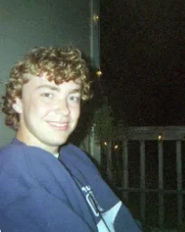
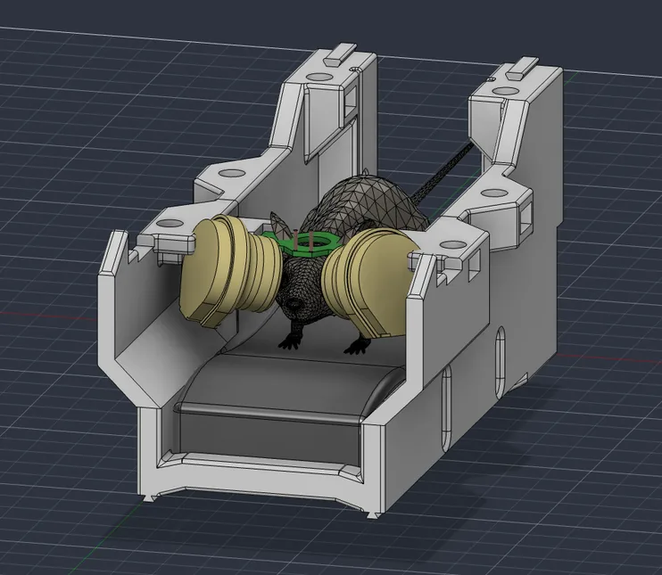
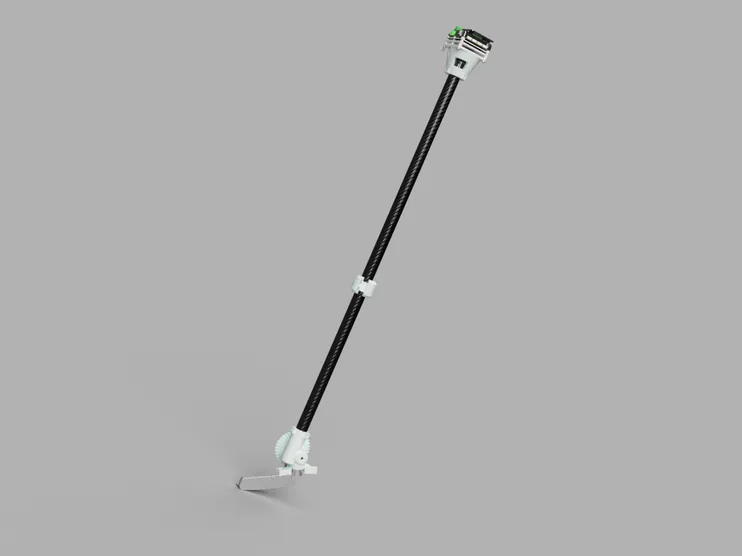
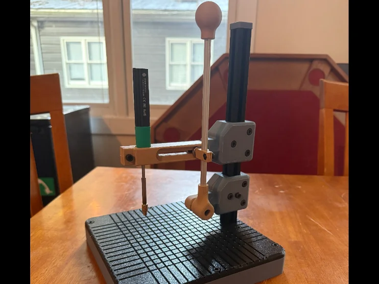
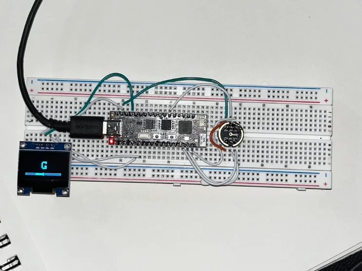
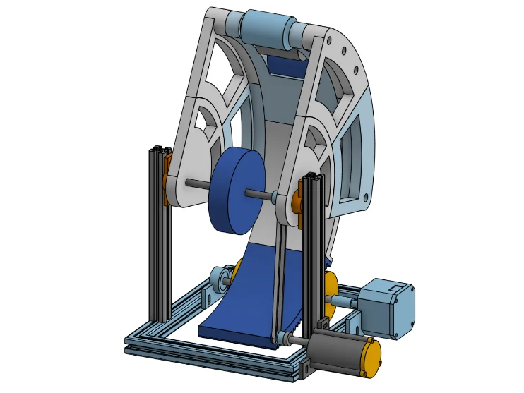
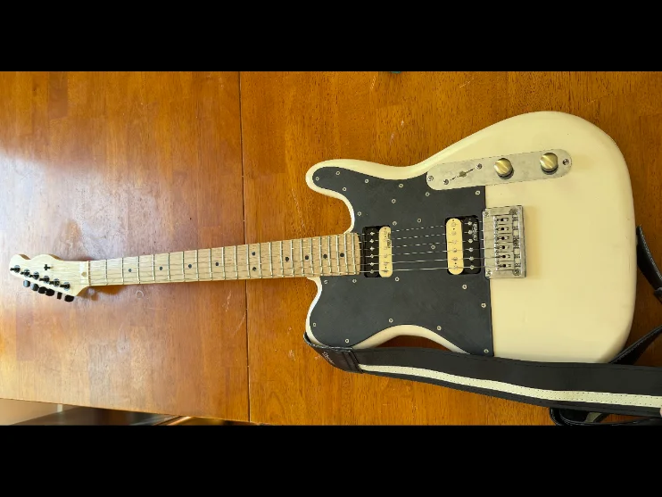
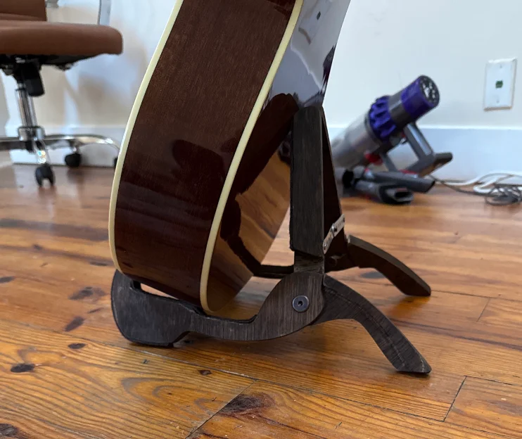
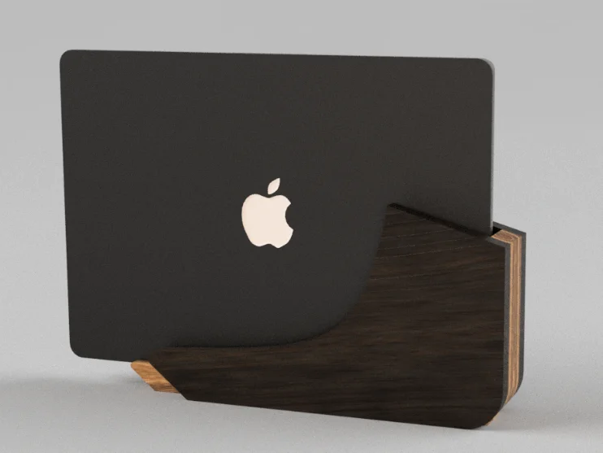

├FOURTH-YEAR · BIOMEDICAL ENGINEERING┤
EVAN
KIESS

FIG. 01E. KIESS
SELECTED WORK
08 ITEMS
P-01
ONGOING · RESEARCH

OPEN
DWG 01
MouseVR
Development of MRI-compatible virtual reality goggles for fMRI in awake mice.
IN PROGRESS
OPEN →
P-02
ONGOING · ROBOTICS

OPEN
DWG 02
Robotic Putter
A tremor-rejecting robotic putter for golfers with shaky hands.
IN PROGRESS
OPEN →
P-03
MECHANICAL

OPEN
DWG 03
Modular Vertical Press
A modular benchtop press for heat-set threaded inserts, built entirely from leftover project materials.
FUSION 360 · FDM
OPEN →
P-04
EMBEDDED

OPEN
DWG 04
Tiny Tuner
A compact guitar tuner built with an ESP32, MEMS microphone, and OLED display.
ESP32 / MEMS / OLED
OPEN →
P-05
ROBOTICS

OPEN
DWG 05
BasketBot
A basketball-shooting robot built with Arduino and computer vision.
ARDUINO · OPENCV
OPEN →
P-06
FABRICATION

OPEN
DWG 06
’72 Telecaster Deluxe
A from-scratch electric guitar inspired by the 1972 Fender Telecaster Deluxe.
ROUTER / HANDTOOLS / FDM
OPEN →
P-07
FABRICATION

OPEN
DWG 07
Guitar Stand
A laser-cut poplar plywood stand in dark walnut, built to hold acoustic and electric guitars.
LASER · PLYWOOD
OPEN →
P-08
DESIGN

OPEN
DWG 08
MacBook Air Dock
A sleek hardwood dock for the M2 MacBook Air with clean cable management.
ROUTER / HANDTOOLS / PLYWOOD
OPEN →